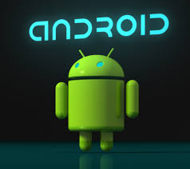
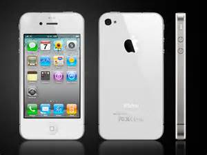

- 1. Herris Suhendra (131113514)
- 2. Andi Chang (131112951)
- 3. Jimmy Chandra (131113107)
-
Smartphone

- adalah telepon yang menyediakan fitur yang berada diatas dan di luar kemampuan sederhana untuk membuat panggilan telepon.
- Sementara istilah dapat digunakan secara wajar untuk semua jenis telepon, smartphone biasanya dipahami sebagai ponsel dan bukan telepon rumah.
- Selama bertahun-tahun, konsep ponsel pintar terus berkembang sebagai perangkat tangan telah menjadi lebih canggih.
- Ponsel pertama yang harus dipertimbangkan smartphone dirancang oleh IBM pada tahun 1992.
- Diberi nama Simon, perangkat membuat penampilan di COMDEX tahun itu, dan ditawarkan kepada publik pada tahun berikutnya.
- Beberapa fitur yang bermanfaat yang sampai saat itu hanya telah tersedia pada desktop dan laptop yang termasuk dalam fungsi tersebut.
- Simon termasuk kalkulator, buku catatan sederhana, kemampuan untuk mengirim dan menerima faks, dan komponen email.
- Dalam waktu singkat, perangkat ini juga disediakan beberapa game bagi pengguna untuk menikmati, serta jam dunia berguna yang memungkinkan pengguna untuk melihat waktu saat ini di kota-kota besar di seluruh dunia.
- Sepanjang sisa tahun 1990-an, berbagai jenis perangkat ponsel canggih muncul di pasaran.
- Layar sentuh mulai menggantikan keysets pada banyak ponsel pintar. Permainan dan fungsi email menjadi lebih canggih seperti model-model baru yang dirilis.
- Kemampuan speakerphone pada banyak versi smartphone mulai menyaingi kualitas yang ditemukan dengan speakerphone handset.
- Saat ini, fungsi smartphone dengan kaya fitur perangkat komunikasi. Penambahan akses Internet adalah inovasi terbaru dalam teknologi smartphone.
- Saat ini, pengguna dapat berselancar di Internet dengan kemudahan yang sama seperti ketika menggunakan laptop atau komputer desktop.
- Pada saat yang sama, banyak produsen garis smartphone telah bekerja untuk meningkatkan kejelasan dan integritas sinyal audio dasar ponsel.
- Hal ini membantu untuk memastikan bahwa bahkan dengan penambahan semua fitur tambahan, masih mungkin untuk menggunakan smartphone untuk membuat panggilan telepon sederhana dan mengharapkan kualitas suara menjadi jernih dan tajam.
-
Sejarah Android
- 
- Sedikit cerita sejarah android,
- Android adalah sistem operasi berbasis kernel Linux
- Pada awalnya dikembangkan oleh Android, Inc, yang didukung Google finansial dan kemudian dibeli pada tahun 2005.
- Android ini diresmikan pada tahun 2007 seiring dengan berdirinya Open Handset Alliance-konsorsium hardware, software, dan perusahaan telekomunikasi yang ditujukan untuk memajukan standar perangkat selular.
- Android tidak memiliki yang namanya official phone untuk Android, sama halnya dengan tidak adanya komputer yang resmi untuk “Windows”.
- Android hanyalah nama untuk sistem operasi mobile hasil pengembangan si Google, oleh karena itu akan sedikit menjadi debat kusir kalau kita membandingkan secara langsung antara si Android dan juga si iPhone.
-
iPhone

- Terkesan bekerja lebih intuitif daripada smartphone berbasis Android,
- Apple iPhone di desain selaras dengan device-nya,
- Sedangkan si Android di desain sedemikian rupa agar bisa kompatibel di banyak varian pabrikan smartphone.
- Setiap fungsi di iPhone memiliki kesan mudah digunakan serta simpel.
- Apalagi dengan kontrol pada touch screen yang intuitif makin menambah kesan ringan dan interaktif serta handal pada operating system dan juga aplikasi-aplikasinya.
- Kebanyakan Aplikasi Aplikasi free di android
- Sedangkan beda dengan ios karena ios aplikasi hampir semua berbayar dan kita dapat merasakan perbedaannya karena harga aplikasi di android terjangkau
-
Apa itu Hp Replika ?
-
hp tiruan yang bentuknya mirip dengan hp aslinya. - Jadi hp replika bisa dikatakan sebagai hp palsu yang dibuat sedemikan rupa menyerupai wujud dari barang yang original yang mana spesifikasinya berbeda dengan spek hp asli yang ditirunya.
- Hp android palsu/replika kini banyak beredar dan harganyapun sangat miring. Hp-hp replika tentu me-replikakan hp2 yang berkelas seperti Galaxy S4, Galaxy S3, iPhone, Nokia N8, dll
- Replika = KW = Copy = King Copy = SuperCopy
-
Asli vs Replika
- Tips membedakan hp replika ini sangat cepat,mudah dan akurat,anda tidak di harus kan melihat dari logo,dari baterai dan banyak lagi
-
Cara Membedakan produk replika di lihat dari : Menu, Bazer, layar sentuh, Ukuran cpu,koneksi internet,dan banyak lagi,dan ada sebagian membandingkan hp replika dengan ori dari ukuran dan ketebalan produk,hal ini memang bisa membedakan hp replika dengan hp ori,namum hal ini sedikit lebih memerlukan sebuah produk original,untuk di bandingkan, - jika tidak tersedia produk original di samping anda,saya yakin anda akan kebinggungan membedakan produk ini,dan perlu proses waktu yang lama untuk membeda kedua produk,hal ini di sebabkan oleh tampilan desain yang mirip berserta os yang di gunakan juga sama-sama android jelly bean.
-
Android (/ˈæn.drɔɪd/; AN-droyd)
- Sistem operasi ini dirilis secara resmi pada tahun 2007,
- Bersamaan dengan didirikannya Open Handset Alliance, konsorsium dari perusahaan-perusahaan perangkat keras, perangkat lunak, dan telekomunikasi yang bertujuan untuk memajukan standar terbuka perangkat seluler.[13]
- Ponsel Android pertama mulai dijual pada bulan Oktober 2008.[14]
-
Antarmuka pengguna Android
- Didasarkan pada manipulasi langsung,
- Menggunakan masukan sentuh yang serupa dengan tindakan di dunia nyata, Seperti :
- Menggesek
- Mengetuk
- Mencubit
- Dan Membalikkan cubitan untuk memanipulasi obyek di layar.
-
Android
- Adalah sistem operasi dengan sumber terbuka, dan Google merilis kodenya di bawah Lisensi Apache.
- Kode dengan sumber terbuka dan lisensi perizinan pada Android memungkinkan perangkat lunak untuk dimodifikasi secara bebas dan didistribusikan oleh para pembuat perangkat, operator nirkabel, dan pengembang aplikasi.
- Selain itu, Android memiliki sejumlah besar komunitas pengembang aplikasi (apps) yang memperluas fungsionalitas perangkat, umumnya ditulis dalam versi kustomisasi bahasa pemrograman Java.[15] Pada bulan Oktober 2012, ada sekitar 700.000 aplikasi yang tersedia untuk Android, dan sekitar 25 juta aplikasi telah diunduh dari Google Play, toko aplikasi utama Android.[16][17] Sebuah survey pada bulan April-Mei 2013 menemukan bahwa Android adalah platform paling populer bagi para pengembang, digunakan oleh 71% pengembang aplikasi seluler.[18]
- Faktor-faktor di atas telah memberikan kontribusi terhadap perkembangan Android, menjadikannya sebagai sistem operasi telepon pintar yang paling banyak digunakan di dunia,[19] mengalahkan Symbian pada tahun 2010.[20] Android juga menjadi pilihan bagi perusahaan teknologi yang menginginkan sistem operasi berbiaya rendah, bisa dikustomisasi, dan ringan untuk perangkat berteknologi tinggi tanpa harus mengembangkannya dari awal.[21] Akibatnya, meskipun pada awalnya sistem operasi ini dirancang khusus untuk telepon pintar dan tablet, Android juga dikembangkan menjadi aplikasi tambahan di televisi, konsol permainan, kamera digital, dan perangkat elektronik lainnya.
-
Sifat Android
- sifat android yang terbuka mendorong munculnya sejumlah besar komunitas pengembang aplikasi untuk menggunakan kode sumber terbuka sebagai dasar proyek pembuatan aplikasi, dengan menambahkan fitur-fitur baru bagi pengguna tingkat lanjut atau mengoperasikan Android pada perangkat yang secara resmi dirilis dengan menggunakan sistem operasi lain.[22]
- Pada November 2013, Android menguasai pangsa pasar telepon pintar global, yang dipimpin oleh produk-produk Samsung, dengan persentase 64% pada bulan Maret 2013.[23] Pada Juli 2013, terdapat 11.868 perangkat Android berbeda dengan beragam versi.[24] Keberhasilan sistem operasi ini juga menjadikannya sebagai target ligitasi paten "perang telepon pintar" antar perusahaan-perusahaan teknologi.[25][26] Hingga bulan Mei 2013, total 900 juta perangkat Android telah diaktifkan di seluruh dunia, dan 48 miliar aplikasi telah dipasang dari Google Play.[27][28] Pada tanggal 3 September 2013, 1 miliar perangkat Android telah diaktifkan.[29]
-
Perkembangan Android
- Saat ini keberadaan platform #Android sangat populer di kalangan pengguna smartphone.
- Platform yang satu ini berhasil mencuri perhatian para pengguna smartphone dan mampu menduduki posisi yang setara bahkan lebih populer ketimbang platform lainnya seperti #Blackberry, Windows dan #iOS.
- Pada bulan Juli 2005, Google mencetuskan kerjasama dengan Android Inc. yang saat itu berlokasi di California, Amerika Serikat. Kala itu para pendiri Android.Inc beranggapan bahwa sistem operasi Android hanya diperuntukkan pada telepon seluler. Sehingga munculah isu bahwa Google hendak memasuki pasar telepon seluler dengan menggandeng Android sebagai sistem operasinya.
- Akhirnya pada periode September 2007, Google memperkenalkan Nexus One
- Salah satu jenis smartphone GSM dengan sistem operasi berbasis Android. Google juga mengajukan hak paten atas aplikasi pada smartphone ini dan kemudian smartphone ini diproduksi oleh HTC Corporation dan mulai dipasarkan pada Januari 2010. Selain itu, pada September 2008 terbentuklah anggota-anggota baru yang bergabung dalam program kerja Android ARM Holdings, yakni Sony Ericsson, Toshiba Corp, SoftBank, Vodafone Group dan beberapa perusahaan lainnya.
- Evaluasi dan pengembangan yang tiada henti menjadi salah satu kunci kesuksesan Android dalam merebut hati para pengguna smartphone dan gadget.
- Salah satu ciri khas Android adalah penamaan tipe-tipenya berdasarkan urutan abjad dan nama-nama makanan.
- Hal ini pula yang membuat para pengguna smartphone dan gadget mudah mengingat tipe-tipe Android apa saja yang telah diluncurkan.
- Berikut ini adalah ulasan singkat mengenai perkembangan tipe Android dari waktu ke waktu:
-
Android 1.1
- Sistem Android yang dikenal dengan nama Android Alpha dan Android Beta ini pertama kali diperkenalkan pada tahun 2007 dan baru mulai diaplikasikan pada smartphone di awal Maret 2009. Sebagai cikal bakal OS Android, versi ini bisa dikatakan cukup berhasil menjadi inisiator kesuksesan besar Android.
-
1. Android 1.5 (Cupcake)
- Sesaat setelah mengaplikasikan sistem operasinya pada smartphone, pada Mei 2009 Android kembali merilis versi terbarunya yang diberi nama Android Cupcake. Android Cupcake menawarkan beragam kelebihan dibandingkan dengan versi terdahulunya, yakni fasilitas unggah video ke Youtube, headset bluetooth yang nirkabel serta tampilan keyboard dan gambar yang lebih atraktif.
-
2. Android 1.6 (Donut)

- Tipe Android yang satu ini diluncurkan hanya berselang 4 bulan setelah peluncuran saudara kandungnya, Android Cupcake. Android Donut telah mengusung keunggulan lainnya yakni tampilan indikator baterai, fasilitas zoom in zoom out, penggunaan koneksi CDMA serta beberapa keunggulan lainnya.
-
3. Android 2.0 / 2.1 (Eclair)
- Masih di tahun 2009, Android kembali meluncurkan teknologi terbarunya yang diberi nama Android Éclair. Era Android Éclair kemudian berhasil menarik para perusahaan gadget untuk mulai membuat gadget dengan sistem layar sentuh yang sebelumnya dianggap kurang user friendly bagi para pengguna smartphone.
-
4. Android 2.2 (Froyo)

- Android Froyo diluncurkan pada Mei 2010, 5 bulan setelah peluncuran Android Éclair. Pada tipe Android yang satu ini, keinginan para pengguna smartphone untuk memiliki kapasitas memori eksternal berupa slot micro SD sudah dapat diwujudkan.
-
5. Android 2.3 (Ginger Bread)

- Si roti jahe yang diluncurkan pada penghujung tahun 2010 memiliki tampilan yang atraktif dan disertai dengan penambahan fitur-fitur seperti dual camera dan video call. Tak hanya itu saja, Ginger Bread juga fokus pada peningkatan kualitas dan grafis game berbasis Android.
-
6. Android 3.0/3.1 (Honeycomb)
- Android yang diluncurkan pada Mei 2011 ini dikhususkan bagi para pengguna tablet PC berbasis Android. User interface nya pun berbeda dengan smartphone Android. Spesifikasi hardware yang tinggi serta tampilan layar yang lebih besar membuat Honeycomb cocok diaplikasikan pada tablet PC.
-
7. Android 4.0
(Ice Cream Sandwich)

- Ice Cream Sandwich diluncurkan pada tahun yang sama dengan peluncuran Honeycomb. Banyak sekali fitur-fitur baru yang disematkan pada Android versi empat ini, diantaranya adalah fitur pendeteksi wajah, fitur yang memaksimalkan kualitas fotografi, kualitas cideo yang lebih baik serta resolusi dan grafis gambar yang sangat memuaskan.
-
8. Android 4.1 (Jelly Bean)

- Sistem Android yang satu ini memberikan support pada fitur on screen keyboard yang membuat kegiatan mengetik menjadi lebih cepat, mudah dan responsif. Salah satu smartphone keren yang mengusung Android Jelly Bean adalah Google Nexus 7 yang diprakarsai oleh perusahaan ASUS.
-
9. Android 4.4 (Kitkat)

- Android Kitkat merupakan versi Android terbaru yang diluncurkan pada bulan September 2013. Penggunaan nama Kitkat menjadi suatu kejutan bagi para pecinta Android, karena nama Kitkat merupakan salah satu nama snack wafer yang populer di dunia. Penggunaan nama ini juga membuat tipe Android ini semakin mudah diingat orang.
10. Android 5.0 (lollipop)
- Android Lollipop adalah versi stabil terbaru dari sistem operasi Android yang dikembangkan oleh Google, yang pada saat ini mencakup versi antara 5.0 dan 5.1. Diresmikan pada 25 Juni 2014 saat Google I / O, dan tersedia secara resmi melalui over-the-air (OTA) update pada tanggal 12 November 2014, untuk memilih perangkat yang menjalankan distribusi Android dilayani oleh Google (seperti perangkat Nexus dan Google Play edition). Kode sumbernya dibuat tersedia pada 3 November 2014.Salah satu perubahan yang paling menonjol dalam rilis Lollipop adalah user interface yang didesain ulang dan dibangun dengan yang dalam bahasa desain disebut sebagai "material design". Perubahan lain termasuk perbaikan pemberitahuan, yang dapat diakses dari lockscreen dan ditampilkan pada banner di bagian atas screen. Google juga membuat perubahan internal untuk platform, dengan Android Runtime (ART) secara resmi menggantikan Dalvik untuk meningkatkan kinerja aplikasi, dan dengan perubahan yang ditujukan untuk meningkatkan dan mengoptimalkan penggunaan baterai, yang dikenal secara internal sebagai Project Volta.